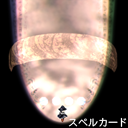

何者に対しても平等に見る性格である。ただ、仕事は妖怪退治である
為、妖怪に対しては厳しいポーズを取っているが、実際は人間にも妖怪
にもさほど興味はない。
宝船と言えば七福神。神様と言えば彼女の出番と思っているが、七福
神の殆どが日本の神様ではない。本当の目的は金銀財宝。
| 基本性能 | |
|---|---|
| 移動速度 | 普 |
| 特技 | 当たり判定が若干小さい |
| 装備紹介 | |
| 一点集中攻撃力重視型 | めざせ宝船、一攫千金！ |
| オプション ： 前方配置オプション | |
| ショット ： 「パスウエイジョンニードル」 | |
| スペルカード： 夢符「退魔符乱舞」 | |
| 特徴 ： 攻撃を前方に集中させた、シンプルな装備 スペルカードの無敵時間の長さと高威力がウリ 遠くからでもショットの威力が高く、使いやすい | |
アンチパターン重視超誘導型 
| また妖怪の仕業ね！ |
| オプション ： 全方位配置オプション | |
| ショット ： 「ホーミングアミュレット」 | |
| スペルカード： 霊符「夢想封印」 | |
| 特徴 ： 敵めがけて飛んでいくホーミングショットがウリ 威力は劣るが、敵の配置を覚えなくても勝手に倒してく ので、避ける事に集中できる | |
ひねくれて見えるが、内実は誰よりも真っ直ぐ。いつも黒い服を着て
いるが、それは魔法使いは黒だと思い込んでいるのと、汚れが目立た
ないと言う理由から来ている。真っ直ぐである。
実際の所、宝船に宝があると思っていない。世の中そんなに甘くない。
宝が無くてもおもしろそうだから乗り込むのである。好奇心旺盛。
| 基本性能 | |
|---|---|
| 移動速度 | 速 |
| 特技 | アイテムの回収速度が速い |
| 装備紹介 | |
| 無限貫通＆常時攻撃型  | 宝船だとしたらお宝がある筈だ |
| オプション ： 前方配置オプション | |
| ショット ： 「イリュージョンレーザー」 | |
| スペルカード： 恋符「マスタースパーク」 | |
| 特徴 ： 貫通力のあるレーザーが絶え間なく出ているのがウリ スペルカードも威力が高く、無敵時間も長い 硬い敵が大量に出てくる場面などで、貫通力が生きてくる | |
超攻撃範囲重視型
| 何だか判らない物に興味津々 |
| オプション ： 全包囲配置オプション | |
| ショット ： 「スーパーショートウェーブ」 | |
| スペルカード： 魔符「アルティメットショートウェーブ」 | |
| 特徴 ： 後ろにも攻撃できるのがウリ ただし、それがいかせる場面が殆どない気もする 前方の攻撃もかなり広いので、雑魚は一掃しやすい | |
普段は神様と妖怪達に囲まれて暮している為、人間の話し相手が欲し
いと思っているが、麓の人間は妖怪染みた人間ばかり。
そのうち、自分もああなるのかと少しだけ心配している。
でも、現人神と慕われただけあって妖怪にも劣らないが、少々惚けた
所もある。
神奈子に言われて妖怪退治の真似事をしてみたり……幻想郷に慣れよ
うとしている。
| 基本性能 | |
|---|---|
| 移動速度 | 普 |
| 特技 | これといって無い |
| 装備紹介 | |
| 一点集中＆誘導型 | 神奈子様の仰るとおりに |
| オプション ： 前方左右配置オプション | |
| ショット ： 「スカイサーペント」 | |
| スペルカード： 蛇符「神代大蛇」 | |
| 特徴 ： ショットが敵と同じ高さまで進むと食らい付くように方向を変える 広範囲に攻撃でき、敵の配置がうろ覚えでも進めるのがウリ スペルカードはもの凄く大きな大蛇（クサリヘビ科） | |
高威力＆広範囲炸裂型
| 諏訪子様の仰るとおりに |
| オプション ： 後方左右配置オプション | |
| ショット ： 「コバルトスプレッド」 | |
| スペルカード： 蛙符「手管の蝦蟇」 | |
| 特徴 ： 敵に当ると炸裂する蛙ショット 広範囲な上に威力もかなり高いのがウリ 欠点はショットの速度が遅くて、狙ったとおりに当てるのが 難しいこと | |
プログラム本体、イメージデータ、曲データ、及びマニュアル全ての著作権は製作者ＺＵＮにあります。
著作者の許可無しで複製、転載、配布を禁じます。
2009 (C)opyright ZUN. All rights reserved.